<!doctype html>
<html>
    <head>
        <title>5 things to know about lung cancer screenings</title>
        <meta http-equiv="Content-Type" content="text/html; charset=UTF-8" />
        <meta name="viewport" content="width=device-width, initial-scale=1.0">
        <link rel="stylesheet" href="css/main.css">
        <link rel="stylesheet" href="fonts/font-awesome-4.6.3/css/font-awesome.min.css">
        <script src="https://use.typekit.net/jnd5ogo.js"></script>
        <script>try{Typekit.load({ async: true });}catch(e){}</script>
    </head>
    <body>

        <div class="wrapper">

            <div id="scrollPane">
                <div class="intro">
                    <div class="container">
                        <div class="title">
                            <div class="large-number">5</div>
                            <h1>things to know about lung cancer screenings</h1>
                        </div>
                    </div>
                </div>
                <div class="section left-text" id="section1">
                    <div class="container">
                        <h2><span>1</span> It could save your life</h2>
                        <p>Cure rates for lung cancer increase significantly when it’s detected early. Finding the disease before symptoms begin often allows patients to be treated with minimally invasive surgery and have less lung tissue removed.</p>
                        <a href="#" class="cta-link">schedule an appointment &raquo;</a>
                        
                    </div>
                </div>
                <div class="section right-text" id="section2">
                    <div class="container">
                        <h2><span>2</span> Not all smokers<br /> need one</h2>
                        <p>Those who will benefit most from lung cancer screening are generally older smokers or former smokers with a history of approximately 30 pack-years (1 pack per day for 30 years or 2 packs per day for 15 years, etc.). Additionally, if you’re unwilling to have surgery if cancer is detected, a screening might not make sense.</p>
                        <a href="#" class="cta-link">calculate your risk &raquo;</a>
                    </div>
                </div>
                <div class="section left-text" id="section3">
                    <div class="container">
                        <h2><span>3</span> Insurance will pay for it</h2>
                        <p>If you’re at least 55 years old and meet the eligibility requirements, both private insurance plans and Medicare will typically cover the lung cancer screening with no <span style="display:inline-block">out-of-pocket</span> costs to you. Talk with your doctor to see if you should consider a screening.</p>
                        <a href="#" class="cta-link">schedule an appointment &raquo;</a>
                        
                    </div>
                </div>
                <div class="section right-text" id="section4">
                    <div class="container">
                        <h2><span>4</span> It’s not a substitute for<br /> quitting smoking</h2>
                        <div class="p-container">
                            <p>The best way to lower your chances of dying from lung cancer is to quit smoking. In 8 out of 10 cases, smoking is the cause of lung cancer. A screening can only detect the disease. But you have the power to prevent it.</p>
                        </div>
                        <a href="#" class="cta-link clearfix">find a specialist &raquo;</a>
                        
                    </div>
                </div>
                <div class="section left-text" id="section5">
                    <div class="container">
                        <h2><span>5</span> There are both benefits and risks</h2>
                        <p>While lung cancer screening can be a life-saving procedure, it also presents potential risks, including possible false alarms that may lead to unneeded additional testing. There is also the risk of being treated for cancer that likely would have never caused harm. And you’ll be exposed to a small amount of radiation during the LDCT scan. Screening should be a shared decision with your doctor.</p>
                        <a href="#" class="cta-link">find a specialist &raquo;</a>
                    </div>
                </div>
            </div>

        </div>

        <div id="scroll">
            <div id="scrollUp">
                <i class="fa fa-angle-up"></i>
            </div>
            <div id="scrollBar">
                <div id="scrollSlider"></div>
            </div>
            <div id="scrollDown">
                <i class="fa fa-angle-down"></i>
            </div>
        </div>

        <script src="https://code.jquery.com/jquery-1.12.0.min.js"></script>
        <script src="js/jquery-ui.min.js"></script>
        <script src="js/jquery.ui.touch-punch.min.js"></script>
        <script src="js/jquery.touchSwipe.min.js"></script>
        <script src="js/main.js"></script>
    </body>
</html>
